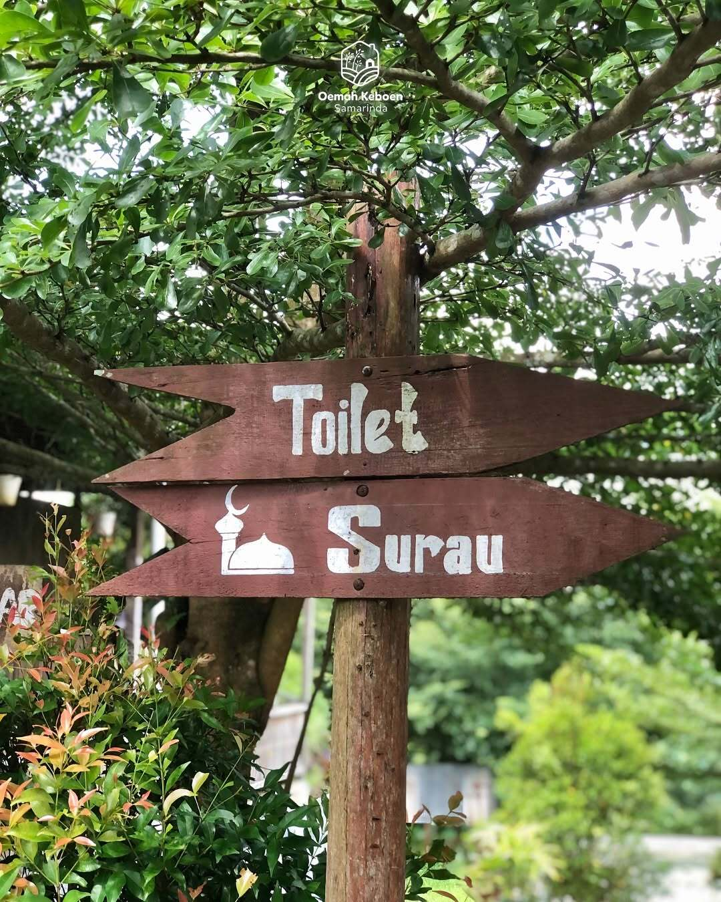
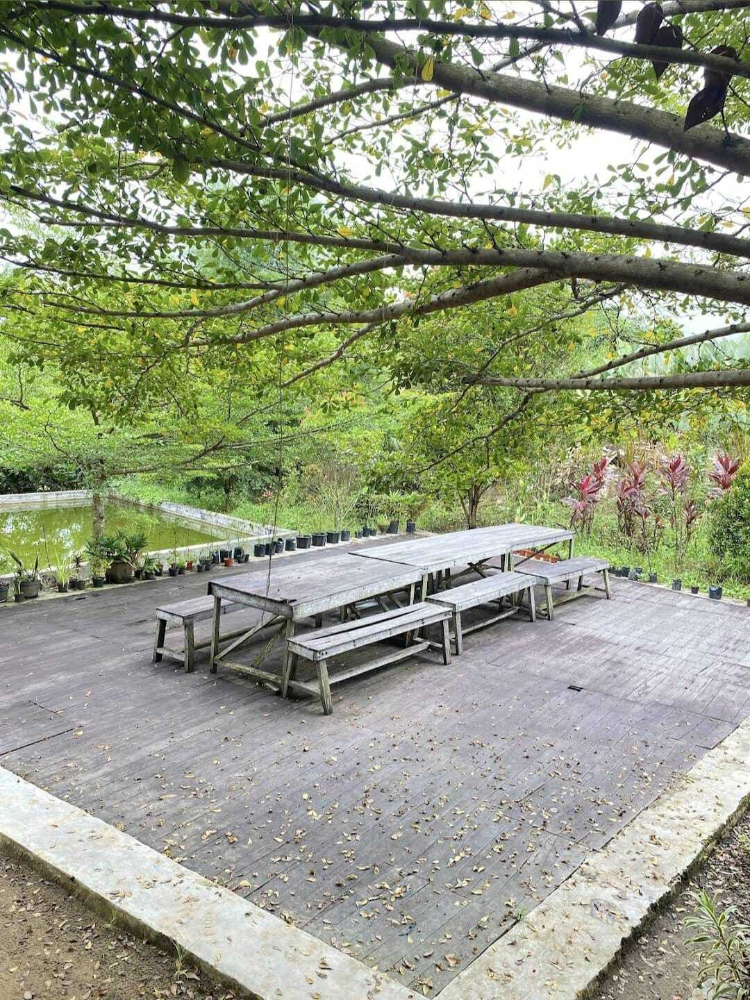

Wisata Petik Buah di Oemah Keboen
Nikmati pengalaman masuk kebun, memetik buah segar langsung dari pohonnya, menjelajahi suasana alam yang asri, dan menciptakan momen spesial bersama keluarga.
Selengkapnya




Tentang Oemah Keboen
Oemah Keboen adalah wisata alam di Samarinda yang menawarkan pengalaman memetik buah langsung dari pohonnya.
Dikelola secara turun-temurun, tempat ini cocok untuk rekreasi dan edukasi dengan berbagai buah seperti jambu kristal, black sapote, dan jambu air..
Mengapa Oemah Keboen?
Oemah Keboen menawarkan pengalaman wisata yang tidak hanya menyenangkan, tetapi juga hangat, edukatif, dan penuh kesegaran alami.
{{ item.title }}
{{ item.desc }}
Galeri Oemah Keboen
Beberapa sudut favorit Oemah Keboen yang memperlihatkan suasana alam, area kebun, serta momen seru bersama keluarga dan teman.
Lokasi Oemah Keboen
Kunjungi Oemah Keboen dan nikmati suasana wisata alam yang nyaman di Samarinda.
Informasi Lokasi
Nama Tempat: Oemah Keboen
Alamat: Jl. Bendungan No.RT 15, Sambutan, Kec. Sambutan, Kota Samarinda, Kalimantan Timur 75241
Jam Operasional: 09.00 - 17.00 WITA (Jum'at, Sabtu, Minggu)
Kontak: 08115522124
FAQ
Pertanyaan yang sering ditanyakan pengunjung sebelum datang ke Oemah Keboen.